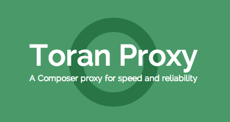

Composer
Pro Tips
October 21st, 2016 - BADCamp, 2016
Rob Loach

Dependency Hell
- Copy and Paste all modules
- Can miss a dependency
- Include individual PHP files
- Difficult to upgrade
- Version-conflicts
Welcome Composer
- Installs full dependency trees
- Resolves version constraints
- PHP Autoloading
- Easily upgrade all dependencies
Install Composer
php -r "copy('https://getcomposer.org/installer', 'composer-setup.php');"
php -r "if (hash_file('SHA384', 'composer-setup.php') === 'e115a8dc7871f15d853148a7fbac7da27d6c0030b848d9b3dc09e2a0388afed865e6a3d6b3c0fad45c48e2b5fc1196ae') { echo 'Installer verified'; } else { echo 'Installer corrupt'; unlink('composer-setup.php'); } echo PHP_EOL;"
php composer-setup.php
php -r "unlink('composer-setup.php');"getcomposer.org
Using Composer
composercomposer initcomposer installcomposer require symfony/yaml
Using Composer
In PHP
require 'vendor/autoload.php';use Symfony\Component\Yaml\Yaml;$value = Yaml::parse(file_get_contents('file.yml'));
Composer Global
User-based dependencies
composer global require drush/drushcomposer global exec drushexport PATH=$PATH:~/.composer/vendor/bindrushcomposer global require composer/composer
Composer Global Require
github.com/consolidation/cgr
Cleans up some of the require paths for global dependencies
By Good ol' Greg Anderson
Composer Versions Check
composer global require sllh/composer-versions-checkcomposer update1 package is not up to date: - symfony/yaml (3.0.1) latest is 3.1.5
Composer Scripts
{
"name": "mycomposer",
"scripts": {
"test": "behat",
"awesometime": "echo 'Hello World'"
}
}composer test--- Runs Behat!composer awesometime--- Hello World
ToranProxy.com

- Fast Composer deployment
- Private repositories
- Funds Composer development!